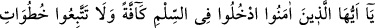
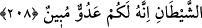

müşâhede etmiş olur. Bu işin başı öncelikle malı terketmektir, sonra çoluk çocuğu, sonra
da nefsi. Buradaki terketmek, gönülden muhabbetlerini silip atmak demektir. Yoksa
ihmâl edip bırakmak anlamında değildir. Malı terkedince “tevhid-i ef ’âl” tecellî eder.
Evlâd u iyâli terkedince “tevhid-i sıfât” tecellî eder. Nefsi (canı) terkedince de
“tevhid-i zât” tecellî eder. Bu ise derecelerin en üstünüdür. Akıllı olana gereken; Allah
Teâlâ’yı çok zikretmektir. Çünkü çokça zikrullahda bulunmak, tasfiye-i bâtın ve kalb
aynasının parlaması için bir sebeptir.
Hak Teâlâ, “Allah’ı çokça zikredin ki, felâha erişesiniz” (el-Cum’a, 62/10)
buyurmuştur. Tâlibin matlûbuna vâsıl olmasından daha büyük bir felâh düşünülemez.
Allah’ım! Bizi felâha erenlerden eyle.
208. Ey îmân edenler! Hep birden barışa girin. Sakın şeytanın peşinden gitmeyin.
Çünkü o, apaçık düşmanınızdır.
Buradaki hitâbın muhâtabı, ya münâfıklardır. Buna göre mânâ: “Ey dilleriyle inandık
diyenler” Allah’a zâhiren ve bâtınen, gönlünüzle ve âzâlarınızla boyun eğip teslim olun.
O’na itaat edin.” şeklinde olur.
Ya da muhâtab ehl-i kitâbın mü’minleridir. Buna göre mânâ: “Ey mü’minler! İslâm’a
tam anlamıyla girin. İslâm’a, onda olmayan şeyi katıp karıştırmayın.” şeklinde olur.
Çünkü onlar, müslüman olduktan sonra da eski dinlerinin bir kısım ahkâmına riâyet
etmekte idiler. Nitekim rivâyet edildiğine göre, Abdullah b. Selâm ve arkadaşları
cumartesi gününe hürmet, devenin et ve sütünden yararlanmaktan sakınmak gibi
Tevrât’ın bazı hükümlerine uymanın İslâm’da da mübah olduğu görüşünde idiler.
Önceki şerîatlerinde farz olan bu ahkâmın İslâm’da hiç olmazsa mübah olduğunu
düşünüyorlardı. Alıştıkları bir âdetten ayrılmak zor geldiği ve helâl olduğuna
inandıkları için bu ahkâmın tatbikine devam ettiler. Efendimiz (s.a.)’ e de dediler ki:
“Ey Allah’ın Rasûlü! Tevrât da Allah’ın bir kitabıdır. Gece namazlarımızda ondan da
okusak ne buyurursunuz?” Nebiyy-i Ekrem (s.a.) buyurdular ki: “Ahkâmı ortadan
kaldırılmış olan (bir kitâb)ın hiçbir şeyine uymayınız. Alışkanlıklarınızı bırakınız.
Ondan vazgeçmekten de çekinip ürkmeyiniz.”
Hak ile beraber olan yalnız olmaz. Dâvâsı hak olan kimsenin korkup çekineceği bir
şey yoktur. Korku ve çekingenlik, şeytanın ilkââtından başka bir şey değildir. Şeytanın
adımlarına uymayınız; onun yolundan gitmeyiniz. Onun Hak’tan ayırıcı yollara olan
dâvetine icâbet etmeyiniz. Boş kuruntu ve vesveselerine aldırmayınız. Zira o size apaçık
düşmandır. Verdiği bu nevi vesveselerle müslümanlığınıza gölge düşürüp; yok etmek
ister. Âyetteki “hutuvât”, “hutve” kelimesinin çoğulu olup yürürken iki ayak arasında